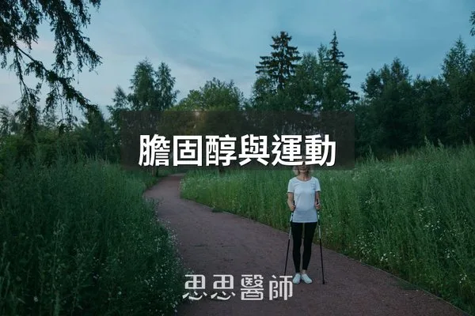
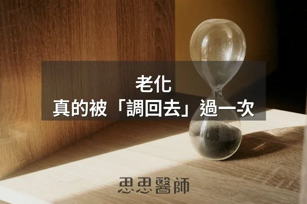

短鏈脂肪酸
2026-10-09
短鏈脂肪酸由腸內菌發酵纖維製造，能改善胰島素阻抗、腸漏症與大腦健康，應通過飲食纖維增加而非口服補充。
YouTube
《健康駭客週報》每週整理最新的健康研究，還有「思思說書」帶你讀完一本好書。用聽的、用看的，比讀文章更輕鬆。

My app
這是我自己做的斷食小工具：大家約好同一段時間一起斷食，你撐得越久，小雞就長得越好。有心情打卡、小測驗，完成還有完賽證書。用手機瀏覽器打開就能玩。
Articles
短鏈脂肪酸由腸內菌發酵纖維製造，能改善胰島素阻抗、腸漏症與大腦健康，應通過飲食纖維增加而非口服補充。

每週150分鐘的走路運動能降低心血管疾病風險35%，運動頻率比強度更重要，持之以恆潛移默化改善血脂。

保養腸胃道應在清晨補充電解質、用蒸煮代替炒炸、進食時專注進食、每日至少12小時不進食、練習腹式呼吸並避免非必要服用抗生素。

2019年TRIIM試驗發現，生長激素、DHEA與二甲雙胍合併治療一年後，受試者的甲基化年齡平均回推了2.5到3.73歲。

DNA甲基化會隨老化出現表觀遺傳漂移，目前只有飲食、睡眠與代謝介入等生活方式被證實能減緩甲基化老化速度。

F:B 比值是 Firmicutes 與 Bacteroidetes 的比例，過高或過低各代表不同的腸道狀態，可從原型食物、多樣纖維、睡眠與壓力調整。
一週一封：《健康駭客週報》這集的研究重點，加上家醫專欄這週的新文章。免費，隨時可以退訂。
Telegram
我每天會在 Telegram 頻道分享一則健康短文：剛發表的研究、我自己的解讀，還有網站和粉絲專頁上看不到的內容。想跟得更緊的人，歡迎加入。
About
經手過大大小小的病人，看著這些病人提出疑問，對症下藥難道就只能是回家吃藥嗎？我認為透過飲食與生活改變，也能正確改善大部分的疾病，包含常見的慢性病，減少藥品的使用，信任我們強大的治癒能力，讓身體達到一個完美平衡。
Picks
我自己在用的好物


Appointments
高雄初日診所 院長
兼任鄰好西醫診所家醫科醫師
立即預約高雄市前鎮區民權二路180號2樓｜07-335-0802
兩處門診皆採預約制，看診前請務必提前預約。